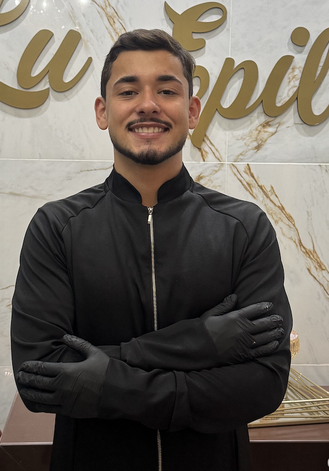
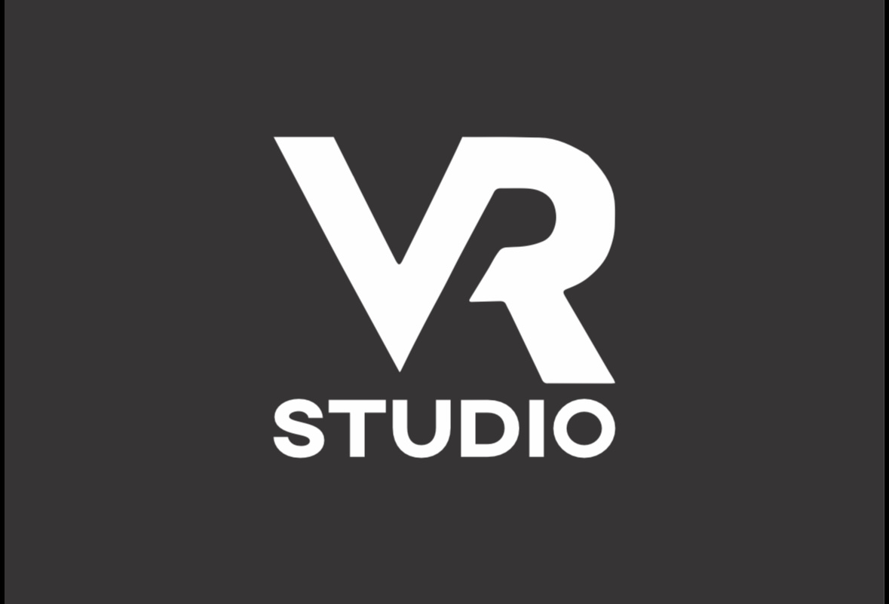
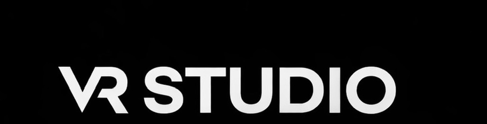

Diagnóstico completo do Instagram atual + todas as mudanças necessárias para transformar @vrstudio.cvo na referência de remoção a laser em Curvelo — antes de qualquer concorrente aparecer.


6 problemas identificados que estão impedindo o @vrstudio.cvo de crescer e converter clientes. Cada um tem solução direta neste plano — e todos serão resolvidos.
A bio é o cartão de visitas do perfil. Em 3 segundos o visitante decide se fica ou vai embora. Vamos transformá-la em uma máquina de direcionamento com posicionamento claro e chamada para ação.
A foto de perfil deve ser a logo ícone (monograma VR, fundo escuro, letras brancas). Limpa, reconhecível e premium — transmite profissionalismo antes mesmo de ler o nome.

Estrutura completa com capas padronizadas (fundo preto, tipografia branca). Cada destaque tem função estratégica — juntos, eles respondem todas as dúvidas e quebram todas as objeções antes do primeiro contato.
Substituir o link atual por uma página com 3 ações diretas. O cliente escolhe como prefere entrar em contato — sem fricção, sem redirecionamentos desnecessários.
6 blocos temáticos que cobrem toda a jornada do cliente — desde descobrir que o serviço existe em Curvelo até o agendamento. Mínimo 1 Reel por semana, meta 2.
Tudo o que será feito nas próximas semanas, em ordem de prioridade. Sem achismo — cada entrega tem data e responsável.